Examples
This page explains each script in examples/ and lets you expand the full source.
cli_export.py
Command-line example that parses arguments, builds a mesh, and exports it with Trimesh.
Source
import argparse
from trimesh.creation import cylinder
def create_mesh(radius: float = 10.0, height: float = 20.0):
return cylinder(radius=radius, height=height)
def main() -> None:
parser = argparse.ArgumentParser()
parser.add_argument("--radius", type=float, default=10.0)
parser.add_argument("--height", type=float, default=20.0)
parser.add_argument("--out", required=True, help="Output file, e.g. model.stl")
args = parser.parse_args()
mesh = create_mesh(radius=args.radius, height=args.height)
mesh.export(args.out)
if __name__ == "__main__":
main()
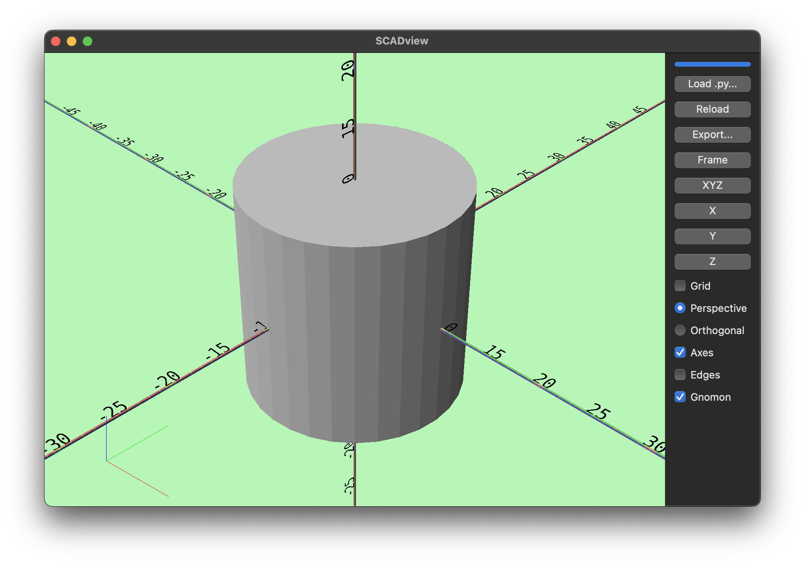
colors.py
Builds a list of colored text meshes, one per Color enum value. This shows how returning a list[Trimesh] enables debug-mode display of multiple meshes at once.
Source
from scadview import Color, set_mesh_color, text
def create_mesh():
all_meshes = []
for i, color in enumerate(Color):
mesh = set_mesh_color(text(color.name), color, 1.0).apply_translation(
[0, (len(Color) - i) * 15, 0]
)
all_meshes.append(mesh)
return all_meshes
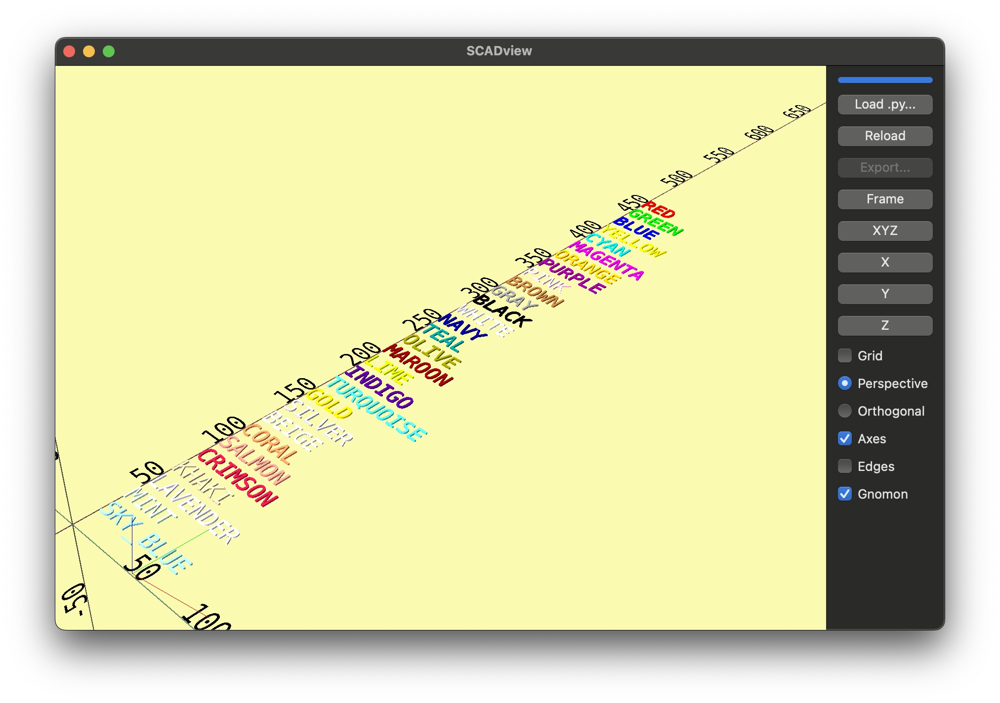
cube_minus_sphere.py
Creates boxes and spheres and by returning a list of shapes, it enters debug mode. It demonstrates colors and transparency in debug mode.
Source
from trimesh.creation import box, icosphere
def create_mesh():
scale = 100.0
box_mesh = box([scale, scale, scale]).subdivide()
box_mesh2 = box([scale, scale, scale]).subdivide()
sphere_mesh = icosphere(radius=0.4 * scale, subdivisions=3)
sphere_mesh2 = icosphere(radius=0.6 * scale, subdivisions=3)
return [
box_mesh,
sphere_mesh2.apply_translation([scale / 2, 0, 0]),
sphere_mesh,
box_mesh2.apply_translation([scale / 2, scale / 2, scale / 2]),
]
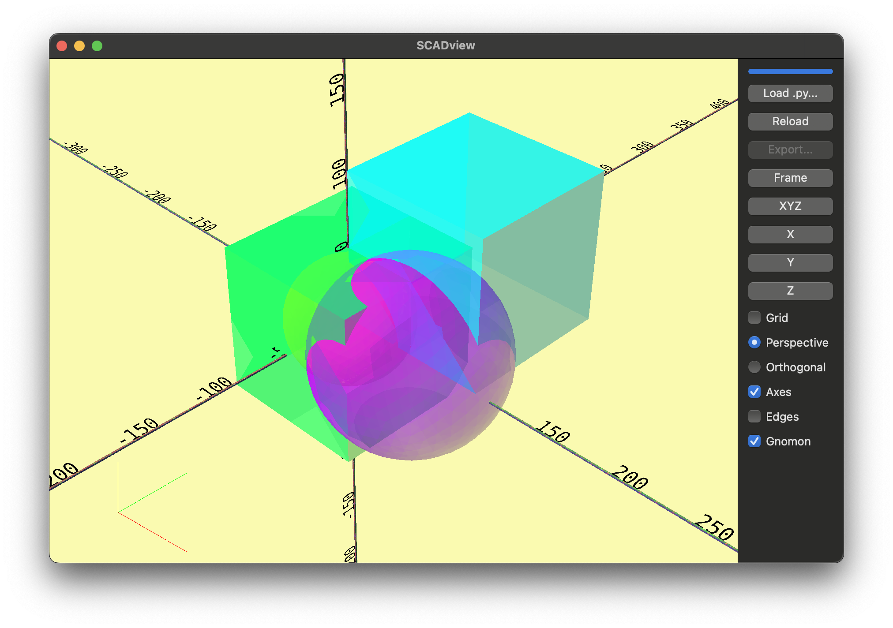
heart_vase.py
Creates a lovely red heart vase.
Source
import numpy as np
import shapely.affinity as sa
import shapely.geometry as sg
import shapely.ops as so
from scadview import linear_extrude, set_mesh_color
WIDTH = 80.0
DEPTH = 70.0
HEIGHT = 140.0
TWIST = 90.0
SCALE = 1.5
SLICES = 120
FN = 96
def create_mesh():
profile = heart_profile(WIDTH, DEPTH)
vase = linear_extrude(
profile,
height=HEIGHT,
center=False,
twist=TWIST,
slices=SLICES,
scale=SCALE,
)
set_mesh_color(vase, (1.0, 0.1, 0.1))
return vase
def heart_profile(width: float, depth: float) -> sg.Polygon:
"""
Build a heart shape that fits inside a width x depth rectangle.
The two lobes are half-circles (full circles used for union).
"""
if width <= 0 or depth <= 0:
raise ValueError("width and depth must be > 0")
left_center, right_center, radius = _lobe_centers(width, depth)
left_lobe, right_lobe = _lobe_circles(left_center, right_center, radius)
bottom_point = (0.0, -depth / 2.0)
triangle = _tangent_triangle(left_center, right_center, radius, bottom_point)
heart = so.unary_union([left_lobe, right_lobe, triangle])
if isinstance(heart, sg.MultiPolygon):
heart = max(heart.geoms, key=lambda geom: geom.area)
heart = sg.Polygon(heart.exterior.coords)
# Ensure final bounds fit exactly (numerical safety).
heart = _fit_to_bounds(heart, width, depth)
# Shift to centroid so twist occurs about the base centroid.
return _center_on_centroid(heart)
def _lobe_centers(
width: float, depth: float
) -> tuple[tuple[float, float], tuple[float, float], float]:
r = width / 4.0
top_y = depth / 2.0
center_y = top_y - r
left_center = (-r, center_y)
right_center = (r, center_y)
return left_center, right_center, r
def _lobe_circles(
left_center: tuple[float, float],
right_center: tuple[float, float],
radius: float,
) -> tuple[sg.Polygon, sg.Polygon]:
left_lobe = sg.Point(left_center).buffer(radius, resolution=FN)
right_lobe = sg.Point(right_center).buffer(radius, resolution=FN)
return left_lobe, right_lobe
def _tangent_triangle(
left_center: tuple[float, float],
right_center: tuple[float, float],
radius: float,
bottom_point: tuple[float, float],
) -> sg.Polygon:
left_tangent = _tangent_point_from_external_point(left_center, radius, bottom_point)
right_tangent = _tangent_point_from_external_point(
right_center, radius, bottom_point
)
return sg.Polygon([left_tangent, right_tangent, bottom_point])
def _tangent_point_from_external_point(
center: tuple[float, float],
radius: float,
point: tuple[float, float],
) -> tuple[float, float]:
cx, cy = center
px, py = point
vx = px - cx
vy = py - cy
d = (vx * vx + vy * vy) ** 0.5
if d <= radius:
raise ValueError("point must be outside circle for tangent construction")
theta = np.arctan2(vy, vx)
alpha = np.arccos(radius / d)
t1 = (cx + radius * np.cos(theta + alpha), cy + radius * np.sin(theta + alpha))
t2 = (cx + radius * np.cos(theta - alpha), cy + radius * np.sin(theta - alpha))
return t1 if t1[1] < t2[1] else t2
def _fit_to_bounds(poly: sg.Polygon, width: float, depth: float) -> sg.Polygon:
bounds = poly.bounds # (minx, miny, maxx, maxy)
scale_x = width / (bounds[2] - bounds[0])
scale_y = depth / (bounds[3] - bounds[1])
return sa.scale(poly, xfact=scale_x, yfact=scale_y, origin="center")
def _center_on_centroid(poly: sg.Polygon) -> sg.Polygon:
centroid = poly.centroid
return sa.translate(poly, xoff=-centroid.x, yoff=-centroid.y)
if __name__ == "__main__":
create_mesh()
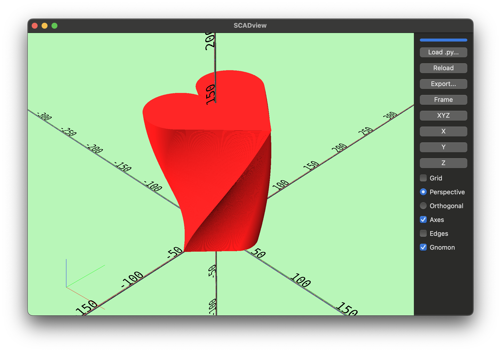
invalid_code.py
Imports a non-existent module to force an import error. Useful for verifying error handling.
Source
import non_existent_module # noqa: F401
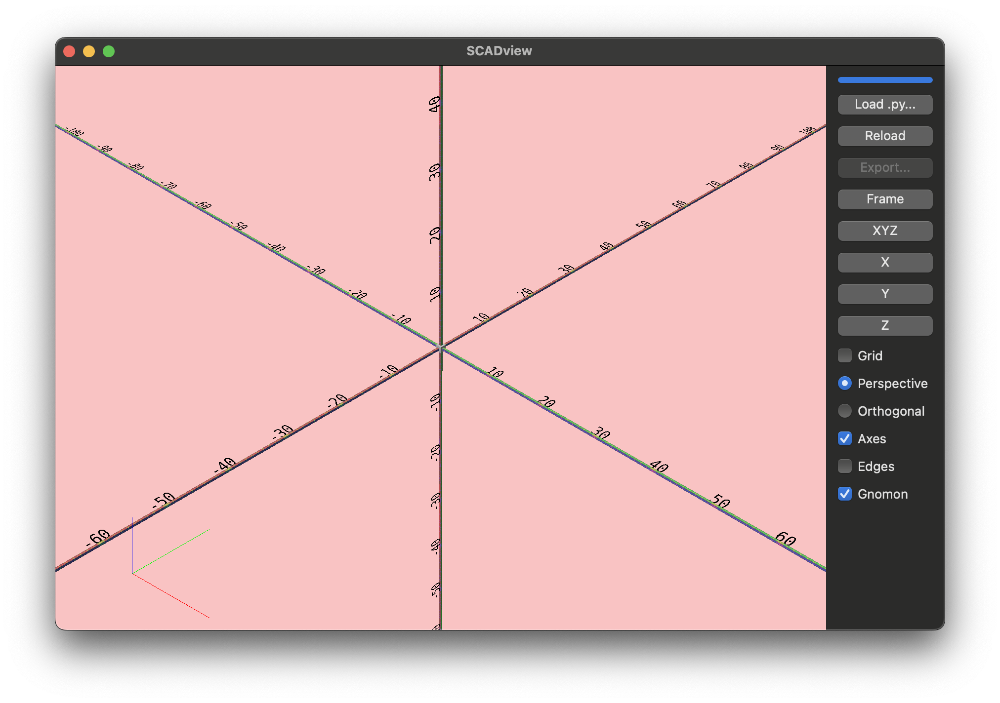
invalid_code_2.py
Calls an undefined function (prin) to trigger a runtime error. Useful for testing error reporting in the UI.
Source
def create_mesh():
prin() # noqa F821
koch_snowflake_vase.py
Generates a Koch-snowflake outline, then uses linear_extrude with twist, slices, and scale to create a tall, twisted vase. Demonstrates procedural 2D shape refinement and extrusion.
Source
import numpy as np
import shapely.geometry as sg
from scadview import linear_extrude
KOCH_DEFAULT_BUMP_LENGTH_FRACTION = np.sqrt(
1.0 / 3.0**2 - 1.0 / 6.0**2
) # 1/3 edge length, 1/6 from midpoint
# Bump length multiplier for the Koch snowflake
# Less that 0.58 does not create a bump, but a straight edge
# More than 1.75-ish creates intersecting edges
BUMP_LENGTH_FRACTION_MULTIPLIER = 1.0
ORDER = 4
R = 50
HEIGHT = 150
TWIST = 60
TRIANGLE_VERTEX_COUNT = 3
SLICES = 20
SCALE = (1.1, 1.5) # scalar or (sx, sy)
def create_mesh():
radial_angles = np.linspace(0, 2 * np.pi, TRIANGLE_VERTEX_COUNT, endpoint=False)
vertices_2d = np.column_stack(
(R * np.cos(radial_angles), R * np.sin(radial_angles))
)
for i in range(ORDER):
vertices_2d = _increase_order(vertices_2d)
return linear_extrude(
sg.Polygon(vertices_2d),
height=HEIGHT,
center=False,
convexity=ORDER,
twist=TWIST,
slices=SLICES,
scale=SCALE,
)
def _increase_order(vertices_2d):
vertices_2d = [
add_midpoint_bump(
edges[0],
edges[1],
KOCH_DEFAULT_BUMP_LENGTH_FRACTION * BUMP_LENGTH_FRACTION_MULTIPLIER,
)
for edges in zip(vertices_2d, np.roll(vertices_2d, -1, axis=0))
]
return np.concatenate(vertices_2d, axis=0)
def add_midpoint_bump(
vertex_a, vertex_b, new_edge_length_fraction=KOCH_DEFAULT_BUMP_LENGTH_FRACTION
):
midpoint = (vertex_a + vertex_b) / 2.0
delta_vector = vertex_b - vertex_a
edge_length = np.linalg.norm(delta_vector)
new_edge_length = edge_length * new_edge_length_fraction
# koch adds 2 points, each at 1/3 of the edge length, both 1/6 from the midpoint
perp_vector_needed_length = np.sqrt(new_edge_length**2 - (edge_length / 6.0) ** 2)
perp_vector = np.array([delta_vector[1], -delta_vector[0]])
perp_vector /= np.linalg.norm(perp_vector)
perp_vector *= perp_vector_needed_length # Normalize to unit length
new_vertex_0 = vertex_a + delta_vector / 3.0
new_vertex_1 = midpoint + perp_vector
new_vertex_2 = vertex_b - delta_vector / 3.0
return np.array([vertex_a, new_vertex_0, new_vertex_1, new_vertex_2])
if __name__ == "__main__":
create_mesh()
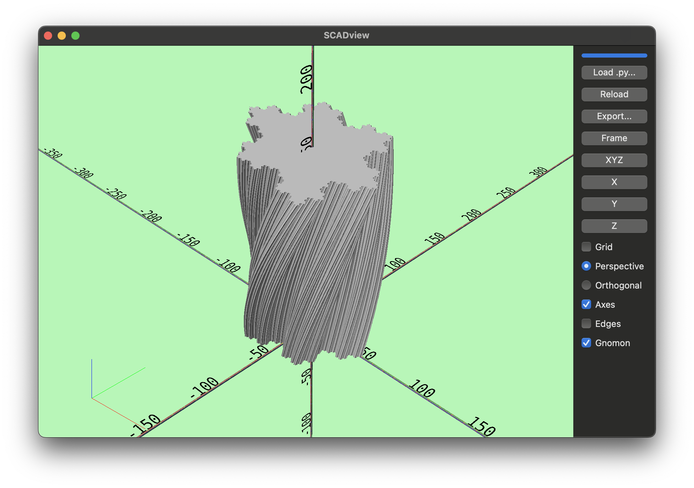
lego.py
Procedurally builds a Lego-style brick with pegs and under-cylinders, yielding intermediate steps as it unions geometry. Demonstrates a complex parametric build with incremental yields.
Source
from trimesh.creation import box, cylinder
from trimesh.transformations import translation_matrix
# Dimensions of the brick (H)/ plate (h)
DIMS = (4, 8)
IS_PLATE = False
class LegoBrick:
# Lego constants
P = 8.0 # multiplier for the peg size
h = 3.2 # height of a plate
H = 3 * h # height of a brick
# INTER_PEG_DISTANCE = 8.0
VERTICAL_WALL_THICKNESS = 1.5
INNER_VERTICAL_WALL_THICKNESS = 0.8
INNER_VERTICAL_WALL_HEIGHT = 6.3
HORIZONTAL_WALL_THICKNESS = 1.0
PEG_D = 4.8 + 0.1 # since my printer seems to make it too small
PEG_H = 1.8
UNDER_PEG_D = 2.6
UNDER_CIRCLE_ID = 4.8
UNDER_CIRCLE_OD = 6.5
INTER_BRICK_GAP = 0.2
def __init__(self, peg_dims, is_plate=False):
self.peg_dims = peg_dims
self.is_plate = is_plate
self.brick = self.create_mesh()
def create_mesh(self):
# Create a box
brk_dims = self.brick_dims()
brick = box(brk_dims)
yield brick
# Move bottom of the box to the origin
bx_translation = translation_matrix([dim / 2 for dim in brk_dims])
inner_brk_dims = self.inner_brick_dims()
inner_brick = box(inner_brk_dims)
yield inner_brick
move_by = [dim / 2 for dim in inner_brk_dims]
move_by[0] = move_by[0] + self.VERTICAL_WALL_THICKNESS
move_by[1] = move_by[1] + self.VERTICAL_WALL_THICKNESS
move_by[2] = inner_brk_dims[2] / 2
inner_brick_translation = translation_matrix(move_by)
brick.apply_transform(bx_translation)
inner_brick.apply_transform(inner_brick_translation)
brick = brick.difference(inner_brick)
yield brick
for i in range(self.peg_dims[0]):
for j in range(self.peg_dims[1]):
peg = self.create_peg_at((i, j))
brick = brick.union(peg)
yield brick
for i in range(self.peg_dims[0] - 1):
for j in range(self.peg_dims[1] - 1):
under_cyl = self.create_under_cylinder_at((i, j))
brick = brick.union(under_cyl)
yield brick
# return brick
def brick_dims(self):
return [
self.P * self.peg_dims[0] - self.INTER_BRICK_GAP,
self.P * self.peg_dims[1] - self.INTER_BRICK_GAP,
self.height(),
]
def height(self):
return self.h if self.is_plate else self.H
def inner_brick_dims(self):
brk_dims = self.brick_dims()
return [
brk_dims[0] - 2 * self.VERTICAL_WALL_THICKNESS,
brk_dims[1] - 2 * self.VERTICAL_WALL_THICKNESS,
brk_dims[2] - self.HORIZONTAL_WALL_THICKNESS,
]
def create_peg_at(self, peg_grid):
peg = cylinder(self.PEG_D / 2, self.PEG_H)
peg_translation = translation_matrix(
[
self.P * (peg_grid[0] + 0.5) - self.INTER_BRICK_GAP / 2,
self.P * (peg_grid[1] + 0.5) - self.INTER_BRICK_GAP / 2,
self.height() + self.PEG_H / 2,
]
)
peg.apply_transform(peg_translation)
return peg
def create_under_cylinder_at(self, cyl_grid):
cyl_height = self.height() - self.HORIZONTAL_WALL_THICKNESS
cyl = cylinder(self.UNDER_CIRCLE_OD / 2, cyl_height)
inner_cl = cylinder(self.UNDER_CIRCLE_ID / 2, cyl_height)
cyl = cyl.difference(inner_cl)
cyl_translation = translation_matrix(
[
self.P * (cyl_grid[0] + 1.0) - self.INTER_BRICK_GAP / 2,
self.P * (cyl_grid[1] + 1.0) - self.INTER_BRICK_GAP / 2,
cyl_height / 2,
]
)
cyl.apply_transform(cyl_translation)
return cyl
def create_mesh():
brick = LegoBrick(DIMS, IS_PLATE)
return brick.create_mesh()
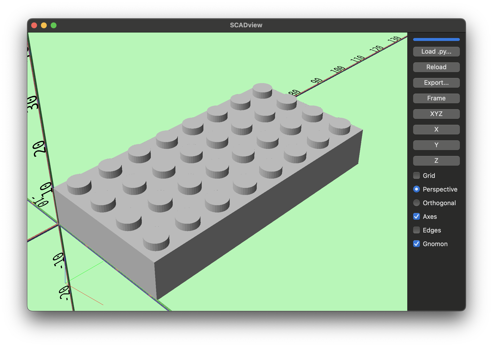
messner_mani.py
Uses manifold3d to carve a cube into a Menger-sponge-like structure by repeatedly subtracting smaller cubes. Yields intermediate meshes as a list to visualize each step in debug mode.
Source
from manifold3d import Manifold
def create_mesh():
for mesh in create_messner(27, 3):
latest = mesh
yield mesh
return latest
def create_messner(extent=1, n=1):
mesh = Manifold.cube([extent, extent, extent], True)
for i in range(0, n):
grid_points_per_line = 3**i
diff_extent = extent / grid_points_per_line / 3.0
step = diff_extent * 3.0
start = (-extent + diff_extent * 3) / 2.0
for j in range(0, grid_points_per_line):
x = start + j * step
for k in range(0, grid_points_per_line):
if j % 3 == 1 and k % 3 == 1:
continue
y = start + k * step
bx = Manifold.cube([diff_extent, diff_extent, extent], True)
bx = bx.translate([x, y, 0])
mesh -= bx
yield mesh
bx = Manifold.cube([diff_extent, extent, diff_extent], True)
bx = bx.translate([x, 0, y])
mesh -= bx
yield mesh
bx = Manifold.cube([extent, diff_extent, diff_extent], True)
bx = bx.translate([0, x, y])
mesh -= bx
yield mesh
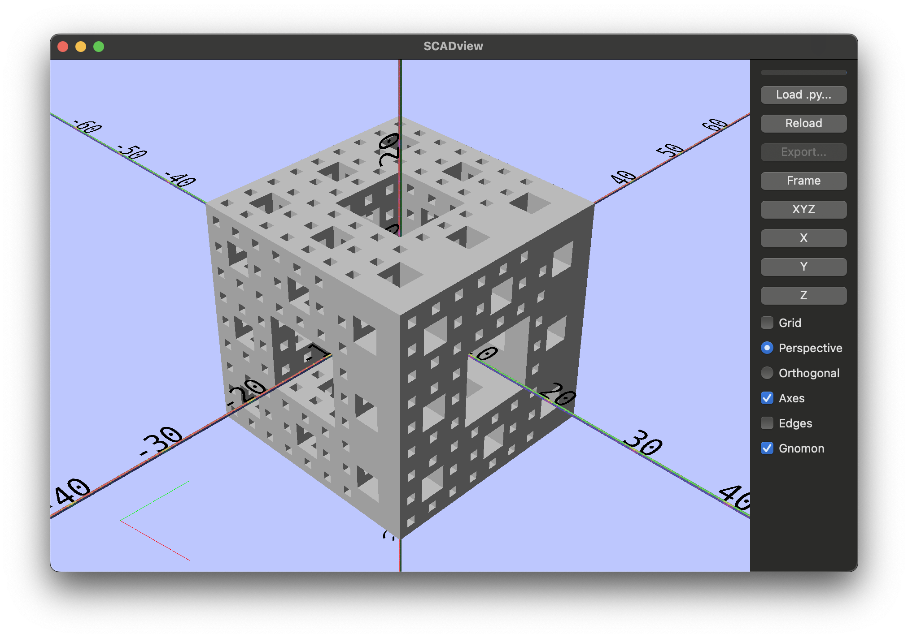
mobius.py
Sweeps a thin rectangle along a circular path with a half twist to form a Mobius strip. Shows sweep_polygon with twist and slice control.
Source
import numpy as np
from shapely import box
from trimesh.creation import sweep_polygon
WIDTH = 10.0
THICK = 0.5
SLICES = 100
OVERSHOOT = (
SLICES + 1
) / SLICES # Overshoot by a slice along the path to close properly
MID_RADIUS = 30.0 # Radius of the strip along the center line
def create_mesh():
bx = box(-WIDTH / 2.0, -THICK / 2.0, WIDTH / 2.0, THICK / 2.0)
theta = np.linspace(0, 2 * np.pi * (SLICES + 1) / SLICES, SLICES)
twist = np.linspace(0, np.pi * (SLICES + 1) / SLICES, SLICES)
circle = MID_RADIUS * np.column_stack(
(
np.cos(theta),
np.sin(theta),
np.zeros(SLICES),
)
)
return sweep_polygon(bx, circle, twist, connect=True, cap=False)
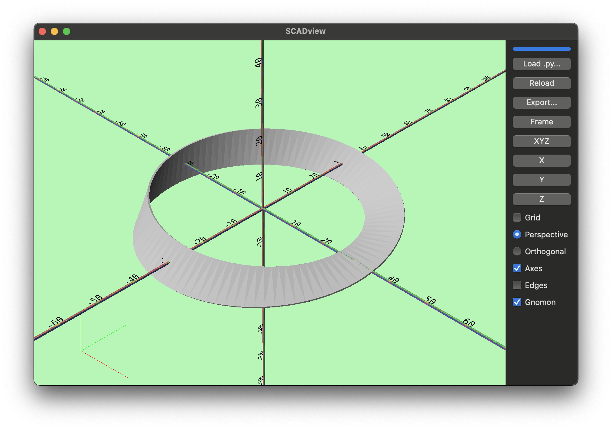
mushroom.py
Builds a mushroom-like shape using icospheres, annuli, and booleans. It sets logging to DEBUG and includes metadata-based coloring notes.
Source
import logging
from trimesh.creation import annulus, box, icosphere
logger = logging.getLogger()
logger.setLevel(logging.DEBUG)
MILLIS_PER_INCH = 25.4
STEM_R_MAX = 6.5 / 2.0
LIP = 0.125
TOP_R = 7.25 / 2.0
def create_mesh():
logging.debug("Creating mushroom mesh")
top = icosphere(radius=TOP_R * MILLIS_PER_INCH).apply_scale([1.0, 1.0, 0.5])
cut = box(
[9 * MILLIS_PER_INCH, 9 * MILLIS_PER_INCH, 4.5 * MILLIS_PER_INCH]
).apply_translation([0.0, 0.0, -4.5 / 2 * MILLIS_PER_INCH])
cut.metadata = {"scadview": {"color": [0.0, 1.0, 0.0, 0.3]}}
inner_top = icosphere(radius=(TOP_R - 0.1) * MILLIS_PER_INCH).apply_scale(
[1.0, 1.0, 0.5]
)
top = top.difference(inner_top).difference(cut)
stem = annulus(
r_max=STEM_R_MAX * MILLIS_PER_INCH,
r_min=(STEM_R_MAX - 0.1) * MILLIS_PER_INCH,
height=2.0 * MILLIS_PER_INCH / 2.0,
).apply_translation([0.0, 0.0, -2.0 * MILLIS_PER_INCH / 4.0])
join = annulus(
r_max=TOP_R * MILLIS_PER_INCH,
r_min=(STEM_R_MAX - 0.1) * MILLIS_PER_INCH,
height=0.1 * MILLIS_PER_INCH,
)
edge = annulus(
r_max=(STEM_R_MAX + 0.125) * MILLIS_PER_INCH,
r_min=(STEM_R_MAX) * MILLIS_PER_INCH,
height=0.1 * MILLIS_PER_INCH,
).apply_translation(
[
0.0,
0.0,
-2.0 * MILLIS_PER_INCH / 2.0,
]
)
return top.union(stem).union(join).union(edge)
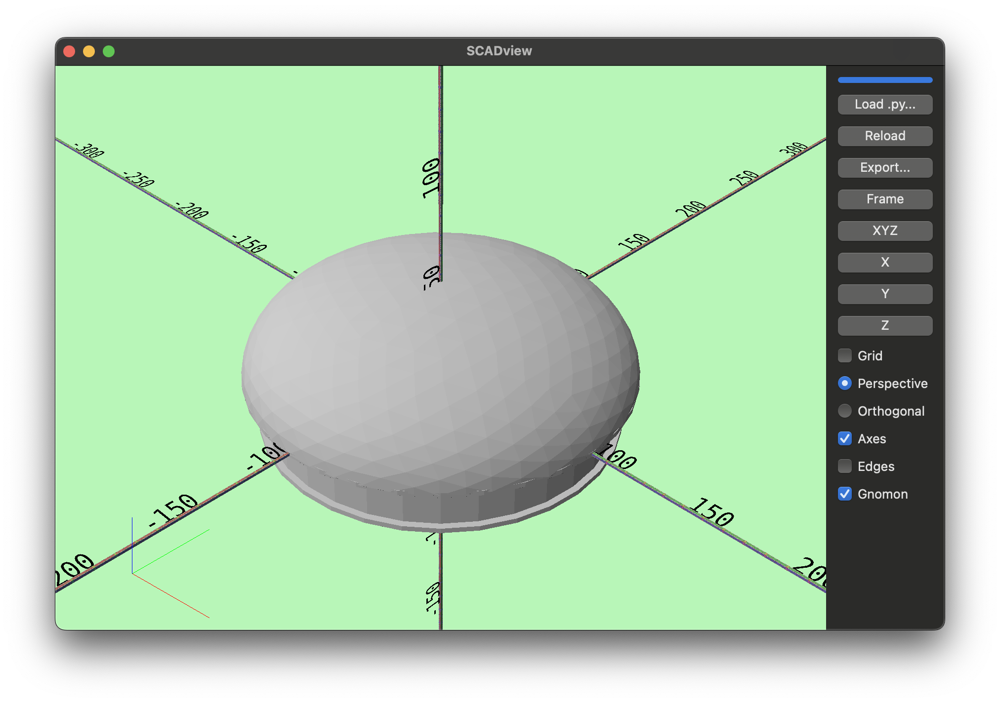
simple_animation.py
A generator that yields a moving box with sleep(...) between frames. This is the minimal animation example.
Source
from time import sleep
from trimesh.creation import box
def create_mesh():
b = box([10, 10, 20])
for _ in range(100):
yield b
sleep(0.1)
b.apply_translation([0.2, 0, 0])
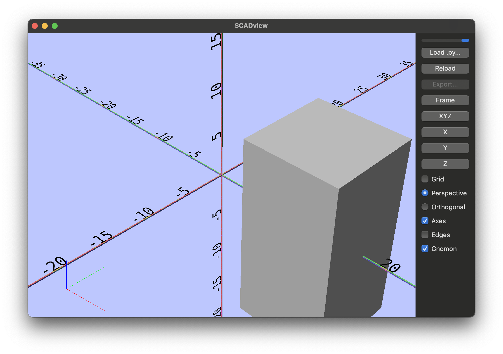
sphere.py
Returns a single icosphere. This is the simplest possible create_mesh.
Source
from trimesh.creation import icosphere
def create_mesh():
return icosphere(radius=40, subdivisions=2)
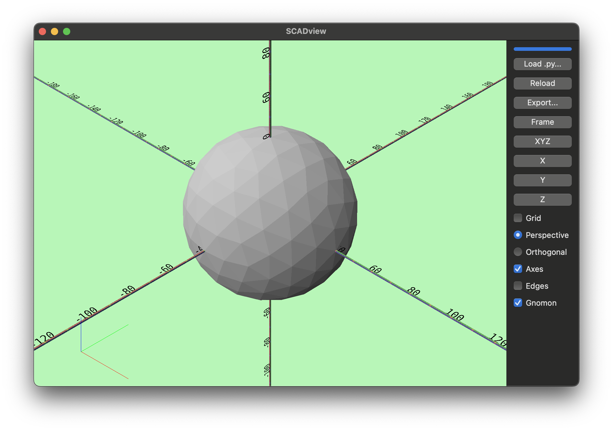
spice_rack.py
Creates a honeycomb spice rack, with constants at the top of the file to set the row and column counts.
Source
import numpy as np
from shapely.geometry import Polygon
from trimesh import Trimesh, transformations
from trimesh.creation import box, extrude_polygon
BOTTLE_DIAMETER = 45.0
BOTTLE_HEIGHT = 120.0
BOTTLE_TOP = 30.0
TILT_DEGREES = 20.0
COLS = 4
ROWS = 3
ALT_ROW_DELTA = 1 # -1, 0, or 1: adjust every other column by this many rows
EXTRA_BOTTOM_ROWS = 1
CLEARANCE = 1.0
WALL_THICKNESS = 2.0
BASE_HEIGHT = 6.0
BOTTOM_POCKET_DEPTH = BASE_HEIGHT * 0.6
def create_mesh() -> Trimesh:
slot_length = _slot_length()
positions_full, positions_all = _slot_positions()
if not positions_all:
return Trimesh()
inner_across_flats = BOTTLE_DIAMETER + CLEARANCE
outer_across_flats = inner_across_flats + 2.0 * WALL_THICKNESS
outer_slot = _build_slot_mesh(outer_across_flats, slot_length + WALL_THICKNESS)
inner_slot = _build_slot_mesh(inner_across_flats, slot_length)
min_y, max_y, min_z_all, max_z = _rack_bounds(positions_all, outer_across_flats)
_, _, min_z_full, _ = _rack_bounds(positions_full, outer_across_flats)
outer = _union_slots(outer_slot, positions_all)
inner_full = _union_slots(inner_slot, positions_full)
inner_extra = _union_slots(inner_slot, positions_all[len(positions_full) :])
inner = inner_full
if inner_extra is not None and inner is not None:
inner_extra = _trim_above_z(inner_extra, min_z_full - BOTTOM_POCKET_DEPTH)
inner = inner.union(inner_extra)
elif inner_extra is not None:
inner = _trim_above_z(inner_extra, min_z_full - BOTTOM_POCKET_DEPTH)
back_plate = _back_plate(slot_length, min_y, max_y, min_z_all, max_z)
base_plate = _base_plate(slot_length, min_y, max_y, min_z_full)
rack = outer
if inner is not None:
rack = rack.difference(inner)
rack = rack.union(back_plate).union(base_plate)
return _trim_rack(rack, slot_length, min_y, max_y, min_z_full).apply_transform(
transformations.rotation_matrix(np.deg2rad(90.0), [0, 0, 1], [0, 0, 0])
)
def _slot_positions() -> tuple[
list[tuple[float, float, float]], list[tuple[float, float, float]]
]:
inner_across_flats = BOTTLE_DIAMETER + CLEARANCE
spacing_across_flats = inner_across_flats + 2.0 * WALL_THICKNESS
_, hex_height = _hex_dims(spacing_across_flats)
col_spacing = _hex_col_spacing(spacing_across_flats)
row_spacing = hex_height
positions_full = _slot_positions_raw(
col_spacing,
row_spacing,
hex_height,
rows=ROWS,
row_start=0,
use_alt_delta=True,
)
y_center, z_min = _position_offsets(positions_full)
positions_full = _apply_offsets(positions_full, y_center, z_min)
positions_extra: list[tuple[float, float, float]] = []
if EXTRA_BOTTOM_ROWS > 0:
positions_extra = _slot_positions_raw(
col_spacing,
row_spacing,
hex_height,
rows=EXTRA_BOTTOM_ROWS,
row_start=-EXTRA_BOTTOM_ROWS,
use_alt_delta=False,
)
positions_extra = _apply_offsets(positions_extra, y_center, z_min)
return positions_full, positions_full + positions_extra
def _slot_length() -> float:
slot_length = BOTTLE_HEIGHT - BOTTLE_TOP
if slot_length <= 0:
raise ValueError("BOTTLE_TOP must be less than BOTTLE_HEIGHT")
return slot_length
def _build_slot_mesh(across_flats: float, slot_length: float) -> Trimesh:
prism = _hex_prism(across_flats, slot_length)
prism.apply_translation((0.0, 0.0, -slot_length / 2.0))
tilt_radians = np.deg2rad(90.0 + TILT_DEGREES)
prism.apply_transform(
transformations.rotation_matrix(tilt_radians, [0, 1, 0], [0, 0, 0])
)
prism.apply_translation((-prism.bounds[0, 0], 0.0, 0.0))
return prism
def _hex_prism(across_flats: float, height: float) -> Trimesh:
return extrude_polygon(_hexagon_polygon(across_flats), height)
def _hexagon_polygon(across_flats: float) -> Polygon:
radius = across_flats / np.sqrt(3.0)
angles = np.deg2rad(30.0 + np.arange(6) * 60.0)
points = np.column_stack((np.cos(angles), np.sin(angles))) * radius
return Polygon(points)
def _hex_dims(across_flats: float) -> tuple[float, float]:
radius = across_flats / np.sqrt(3.0)
width = 2.0 * radius
height = np.sqrt(3.0) * radius
return width, height
def _hex_col_spacing(across_flats: float) -> float:
radius = across_flats / np.sqrt(3.0)
return 1.5 * radius
def _slot_positions_raw(
col_spacing: float,
row_spacing: float,
hex_height: float,
rows: int,
row_start: int,
use_alt_delta: bool,
) -> list[tuple[float, float, float]]:
rows_per_col: list[int] = []
z_offsets: list[float] = []
for col in range(COLS):
# rows_in_col = rows + 1
rows_in_col = rows
if use_alt_delta and col % 2 == 1:
rows_in_col += ALT_ROW_DELTA
rows_per_col.append(max(1, rows_in_col))
z_offsets.append(_calculate_z_offset(col, hex_height, use_alt_delta))
positions: list[tuple[float, float, float]] = []
for col in range(COLS):
z_offset = z_offsets[col]
for row in range(row_start, row_start + rows_per_col[col]):
y = col * col_spacing
z = row * row_spacing + z_offset
positions.append((0.0, y, z))
return positions
def _calculate_z_offset(col: int, hex_height: float, use_alt_delta: bool) -> float:
if not use_alt_delta or ALT_ROW_DELTA == 0:
return (hex_height / 2) if (col % 2 == 1) else 0.0
if col % 2 == 1:
return -ALT_ROW_DELTA * hex_height / 2
return 0.0
def _position_offsets(
positions: list[tuple[float, float, float]],
) -> tuple[float, float]:
ys = [p[1] for p in positions]
zs = [p[2] for p in positions]
y_center = (min(ys) + max(ys)) / 2.0
z_min = min(zs)
return y_center, z_min
def _apply_offsets(
positions: list[tuple[float, float, float]],
y_center: float,
z_min: float,
) -> list[tuple[float, float, float]]:
return [(p[0], p[1] - y_center, p[2] - z_min) for p in positions]
def _union_slots(
slot_mesh: Trimesh, positions: list[tuple[float, float, float]]
) -> Trimesh | None:
if not positions:
return None
mesh = slot_mesh.copy().apply_translation(positions[0])
for pos in positions[1:]:
mesh = mesh.union(slot_mesh.copy().apply_translation(pos))
return mesh
def _rack_bounds(
positions: list[tuple[float, float, float]],
across_flats: float,
) -> tuple[float, float, float, float]:
width, height = _hex_dims(across_flats)
half_w = width / 2.0
half_h = height / 2.0
min_y = min(p[1] - half_w for p in positions)
max_y = max(p[1] + half_w for p in positions)
min_z = min(p[2] - half_h for p in positions)
max_z = max(p[2] + half_h for p in positions)
return min_y, max_y, min_z, max_z
def _back_plate(
slot_length: float,
min_y: float,
max_y: float,
min_z: float,
max_z: float,
) -> Trimesh:
size_x = WALL_THICKNESS
size_y = max_y - min_y
size_z = max_z - min_z
center = (
slot_length + WALL_THICKNESS / 2.0,
(min_y + max_y) / 2.0,
(min_z + max_z) / 2.0,
)
return box((size_x, size_y, size_z)).apply_translation(center)
def _base_plate(
slot_length: float,
min_y: float,
max_y: float,
min_z: float,
) -> Trimesh:
size_x = slot_length + WALL_THICKNESS
size_y = max_y - min_y
size_z = BASE_HEIGHT
center = (
size_x / 2.0,
(min_y + max_y) / 2.0,
min_z - BASE_HEIGHT / 2.0,
)
return box((size_x, size_y, size_z)).apply_translation(center)
def _trim_rack(
rack: Trimesh,
slot_length: float,
min_y: float,
max_y: float,
min_z: float,
) -> Trimesh:
size_x = slot_length + WALL_THICKNESS
size_y = max_y - min_y
size_z = (rack.bounds[1, 2] - (min_z - BASE_HEIGHT)) + WALL_THICKNESS
center = (
size_x / 2.0,
(min_y + max_y) / 2.0,
(min_z - BASE_HEIGHT) + size_z / 2.0,
)
trim = box((size_x, size_y, size_z)).apply_translation(center)
return rack.intersection(trim)
def _trim_above_z(mesh: Trimesh, z_min: float) -> Trimesh:
bounds = mesh.bounds
size_x = bounds[1, 0] - bounds[0, 0]
size_y = bounds[1, 1] - bounds[0, 1]
size_z = bounds[1, 2] - z_min
center = (
(bounds[0, 0] + bounds[1, 0]) / 2.0,
(bounds[0, 1] + bounds[1, 1]) / 2.0,
z_min + size_z / 2.0,
)
trim = box((size_x, size_y, size_z)).apply_translation(center)
return mesh.intersection(trim)
if __name__ == "__main__":
create_mesh()
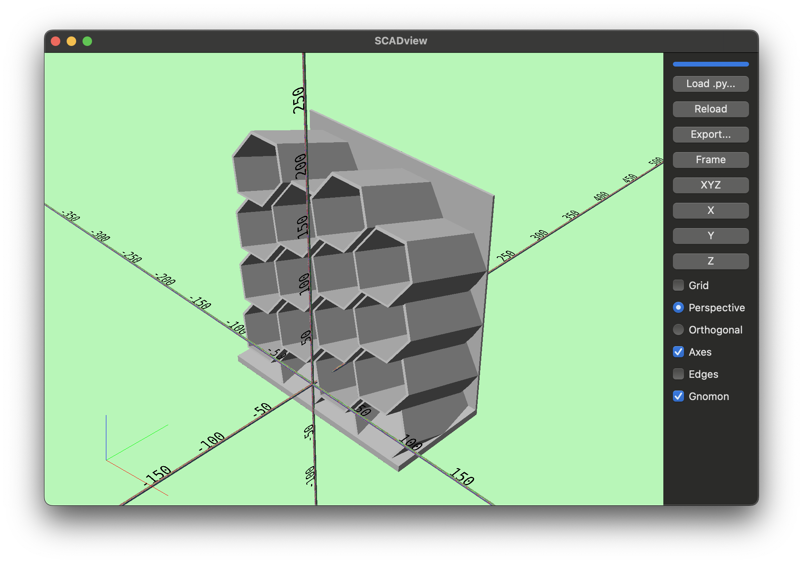
star_linear_extrude.py
Constructs a 2D star polygon with an inner hole and extrudes it with twist and taper. Demonstrates linear_extrude parameters like twist, slices, and scale.
Source
import logging
import numpy as np
import shapely.geometry as sg
from scadview import linear_extrude
POINTS = 5
R1, R2 = 1.0, 2.0
INNER_SCALE = 0.5
HEIGHT = 10.0
SLICES = 120
EXTRUDE_SCALE = 2.5
TWIST_ANGLE = 270
def create_mesh():
# simple 2D star to demo twist/taper; will be projected if 3D is passed
star = [
(
(
R2 * np.cos(2 * np.pi * i / (2 * POINTS)),
R2 * np.sin(2 * np.pi * i / (2 * POINTS)),
)
if i % 2 == 0
else (
R1 * np.cos(2 * np.pi * i / (2 * POINTS)),
R1 * np.sin(2 * np.pi * i / (2 * POINTS)),
)
)
for i in range(2 * POINTS)
]
inner_star = [(INNER_SCALE * x, INNER_SCALE * y) for x, y in star]
poly = sg.Polygon(star, [inner_star])
return linear_extrude(
poly,
height=HEIGHT, # OpenSCAD: required
center=True, # OpenSCAD default
# convexity=10, # accepted/ignored
twist=TWIST_ANGLE, # total degrees
slices=SLICES, # use fn if given; else 20
scale=EXTRUDE_SCALE, # scalar or (sx, sy)
# fn=10, # optional OpenSCAD-like override for slices
)
if __name__ == "__main__":
logging.basicConfig(level=logging.DEBUG)
mesh = create_mesh()
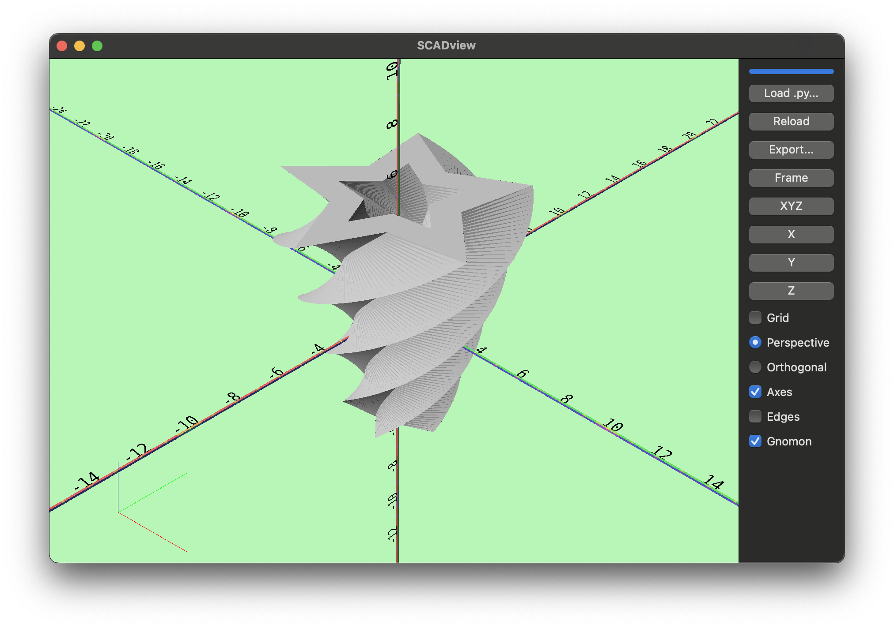
surface_bend.py
Loads a heightmap from the splash image using surface(...), then bends its vertices around an arc and rebuilds a Trimesh. This example shows post-processing vertex positions and applying transforms.
Source
import os
import numpy as np
from trimesh import Trimesh, transformations
from scadview import surface
def create_mesh():
pixel_size = (388, 400)
desired_x_size = 200.0
height = 20.0
scale = desired_x_size / pixel_size[0]
parent_dir = os.path.dirname(os.path.abspath(__file__))
mesh = surface(
os.path.join(parent_dir, "../src/scadview/resources/splash.png"),
scale=(scale, scale, height),
invert=True,
base=0.0,
)
# return mesh
curve = 2 * np.pi # / 6.0
curved_verts = bend_x(mesh.vertices, arc_radians=curve)
curved_mesh = Trimesh(vertices=curved_verts, faces=mesh.faces)
# rotate about the y axis so curved mesh edges lie on the xy plane (90 degrees - curve in degreees / 2.0)
rot = transformations.rotation_matrix(
angle=np.pi / 2.0 - curve / 2.0,
direction=[0, 1, 0],
point=(0, 0, 0),
)
curved_mesh.apply_transform(rot)
return curved_mesh
def bend_x(vertices: np.ndarray, arc_radians: float = np.pi / 2.0) -> np.ndarray:
"""
Bend the mesh along the x-axis.
The x coords are mapped to an arc in the xz plane with the given inner radius.
The arc starts at the minimum x value, and its length is equal to the range of x values in the mesh.
rad_x = arc_radians * (x - min(x)) / (max(x) - min(x))
inner_radius is computed so that inner_radius * arc_radians is the length of the arc.
So inner_radius = (max(x) - min(x)) / arc_radians.
x = (inner_radius + z) * np.cos(rad_x) + (max(x) - min(x)) / 2
z = (inner_radius + z) * np.sin(rad_x)
y is unchanged.
"""
x, y, z = vertices.T
print(np.shape(vertices), np.shape(x), np.shape(y), np.shape(z))
x_min = np.min(x)
x_max = np.max(x)
x_span = x_max - x_min
print(f"x_min: {x_min}, x_max: {x_max}, x_span: {x_span}")
inner_radius = x_span / arc_radians
rad_x = arc_radians * (x - x_min) / x_span
x_new = -(inner_radius + z) * np.cos(rad_x) + inner_radius
z_new = (inner_radius + z) * np.sin(rad_x)
print(f"x_new: {np.shape(x_new)}, z_new: {np.shape(z_new)}")
return np.stack((x_new, y, z_new), axis=-1)
def recompute_trimesh(mesh):
mesh._cache.clear()
mesh.fix_normals()
if __name__ == "__main__":
mesh = create_mesh()
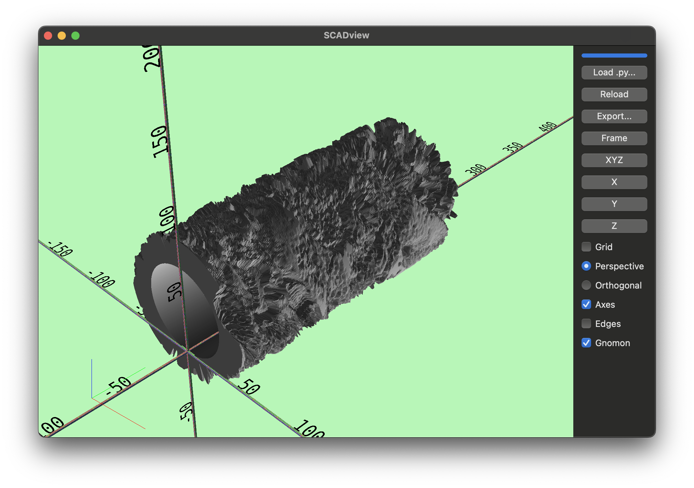
surface_.py
Loads a heightmap from the splash image using surface(...).
Source
import os
from scadview import surface
def create_mesh():
pixel_size = (388, 400)
desired_x_size = 200.0
height = 10.0
scale = desired_x_size / pixel_size[0]
parent_dir = os.path.dirname(os.path.abspath(__file__))
mesh = surface(
os.path.join(parent_dir, "../src/scadview/resources/splash.png"),
scale=(scale, scale, height),
invert=True,
base=0.0,
)
return mesh
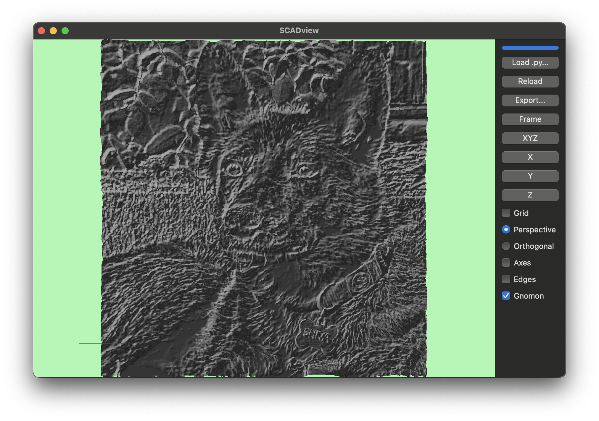
text.py
Uses text(...) with a specific font and alignment options, then scales in Z to add thickness. Demonstrates text mesh creation and font selection.
Source
from scadview import text
def create_mesh():
t = "SCADview"
font = "Papyrus:style=Condensed"
return text(
t,
font=font,
size=100,
valign="bottom",
halign="right",
direction="ltr",
).apply_scale((1.0, 1.0, 10.0))
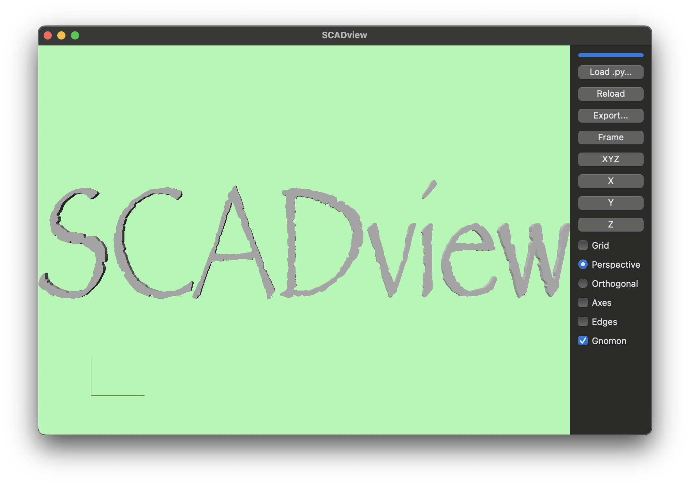
toothbrush_holder.py
A full parametric design that yields intermediate meshes as it builds a multi-tube holder with labeled name plates and a base. It demonstrates incremental yield updates, boolean unions/differences, and procedural layout.
Source
from typing import Generator
import numpy as np
from shapely.geometry import Polygon
from trimesh import Trimesh, transformations
from trimesh.creation import box, cylinder, extrude_polygon
from scadview import text
"""
A toothbrush holder with a tube for each person in the household.
Each tube is made from a hexagonal grid bent into a tube shape.
Each tube is labeled with the person's name.
The tubes are arrange in a circle on a circular base plate.
The center axis of each tube extends from a circle on the base plate,
to a circle at the top of the tube.
Both circles have the same radius, and are centered on the same axis
as the base plate.
The tubes are tilted to hold the toothbrushes at an angle.
"""
# Names to mark each holder tube
NAMES = [
"NEIL",
"ADAM",
"SOPHIE",
]
TUBE_INNER_R = 9.5 # Tube size for a toothbrush (radius)
TUBE_H = 100 # height of tube when standing upright
TILT = np.deg2rad(-30) # tilt of tube
TUBE_COUNT = len(NAMES) # number of toothbrushes to hold
TUBE_WALL = 3 # Thickness of the tube wall
HEX_GRID_COLS = 8 # Count of cols in the hex grid that makes the tube
GRID_DIV_WIDTH = 1.5 # Thickeness of the divisions between the hex cells
POSITIONING_R = (
28 # Radius of the circle on which the center of the tubes tops / bottoms are positioned
# If the tubes intersect too deeply, increase this.
)
# Radius of the circle the center of the tubes are positioned on
# (position_r)**2 = center_positioning_r**2 + (sin(tilt) * tube_h / 2)**2
CENTER_POSITIONING_R = np.sqrt(
np.square(POSITIONING_R) - np.square(np.sin(TILT) * TUBE_H / 2)
)
FONT = "Helvetica" # Font for names
FONT_H = TUBE_WALL # Extruded height of the font
FONT_SIZE = 8 # font "size"
NAME_PLATE_H = 3 # Height of base under name
NAME_PLATE_BORDER = 2
BASE_R = 41 # Radius of the base - make large enough so that the tube bottom ends are completely embedded in the base
BASE_H = 5 # Height (thickness) of the base
def create_mesh() -> (
Trimesh | list[Trimesh] | Generator[Trimesh | list[Trimesh], None, None]
):
hex_grid = make_grid(TUBE_INNER_R, TUBE_H, TUBE_WALL, HEX_GRID_COLS, GRID_DIV_WIDTH)
yield hex_grid
# Each tube is moved radially in evenly spaced directions around a full circle
tube_move_directions = np.linspace(0.0, 2 * np.pi, len(NAMES) + 1)
mesh = Trimesh() # Keep the type checking happy
mesh_started = False
for name, direction in zip(NAMES, tube_move_directions):
name_mesh = text(
name,
FONT_SIZE,
font=FONT,
halign="center",
).apply_scale([1, 1, FONT_H])
yield name_mesh
grid_mesh = add_name(
hex_grid.copy(),
name_mesh,
NAME_PLATE_H,
NAME_PLATE_BORDER,
)
yield grid_mesh
tube = build_tube(grid_mesh, TUBE_H, TILT, CENTER_POSITIONING_R, direction)
if not mesh_started:
mesh = tube
mesh_started = True
else:
mesh = mesh.union(tube)
yield mesh
base_top_at = (TUBE_INNER_R + TUBE_WALL + GRID_DIV_WIDTH * 2) * np.sin(-TILT)
base = cylinder(BASE_R, BASE_H).apply_translation([0, 0, base_top_at - BASE_H / 2])
mesh = mesh.union(base)
yield mesh
# cut off anything extruding past the bottom of th base
cut_height = TUBE_H # some high number
cut_top_at = base_top_at - BASE_H
cut_r = BASE_R * 1.1 # something bigger than the base radius
cut = cylinder(cut_r, cut_height).apply_translation(
[0, 0, cut_top_at - cut_height / 2]
)
yield mesh.difference(cut)
def make_grid(
tube_inner_r: float,
tube_h: float,
tube_wall: float,
grid_cols: int,
grid_div_width: float,
):
hex_cell_dims, rows = hex_cell_dims_for_tube(
tube_inner_r, tube_h, tube_wall, grid_div_width, grid_cols
)
grid = hex_grid(hex_cell_dims, grid_cols, rows, grid_div_width)
frame_dims = hex_grid_dims(hex_cell_dims, grid_cols, rows)
bottom_frame = box(
(frame_dims[0], grid_div_width, frame_dims[2])
).apply_translation((frame_dims[0] / 2, 0, frame_dims[2] / 2))
top_frame = bottom_frame.copy().apply_translation((0, frame_dims[1], 0))
return (
grid.union(top_frame)
.union(bottom_frame)
.apply_translation([0, grid_div_width / 2, 0])
)
def hex_cell_dims_for_tube(
tube_inner_r: float,
tube_h: float,
tube_wall: float,
grid_div_width: float,
cols: int,
) -> tuple[tuple[float, float, float], int]:
# cols must be even for this to work.
# The last col is only .75 wide so it can mate with its
# other side when bent into a tube
# 2 * pi * tube_inner_r = cols * cell_dim_x * 0.75
# 2 * pi * tube_inner_r = cell_dim_x * ( 0.75 * (cols - 1) + 1)
# 2 * pi * tube_inner_r = cell_dim_x * ( 0.75 * cols + 0.25)
# so cell_dim_x = 2 * pi * tube_inner_r / (cols * .75)
cell_dim_x = 2 * np.pi * tube_inner_r / (cols * 0.75)
rows = round(tube_h / cell_dim_x)
cell_dim_y = (tube_h - grid_div_width) / rows
return (cell_dim_x, cell_dim_y, tube_wall), rows
def add_name(
grid_mesh: Trimesh,
name_mesh: Trimesh,
name_plate_h: float,
name_plate_border: float,
) -> Trimesh:
"""
Place name so that it will run vertically along the tube.
Add a plate behind it.
"""
name_mesh_dims = name_mesh.bounds[1] - name_mesh.bounds[0]
base_dims = [
name_mesh_dims[0] + name_plate_border, # Only add the border at end of name
# Add border on top and bottom of name:
name_mesh_dims[1] + name_plate_border * 2,
name_plate_h,
]
base = box(base_dims).apply_translation(
(2, base_dims[1] / 2 - name_plate_border, -base_dims[2] / 2)
)
name_mesh = name_mesh.union(base)
name_mesh.apply_translation((name_mesh_dims[0] / 2, 0, name_plate_h))
name_mesh.apply_transform(
transformations.rotation_matrix(-np.pi / 2, [0, 0, 1], [0, 0, 0])
)
grid_mesh_center = (grid_mesh.bounds[1] + grid_mesh.bounds[0]) / 2
name_mesh.apply_translation((grid_mesh_center[0], grid_mesh.bounds[1, 1], 0))
return grid_mesh.union(name_mesh)
def hex_grid(
cell_dims: tuple[float, float, float],
cols: int,
rows: int,
wall_width: float,
) -> Trimesh:
"""
Create a hexagonal grid of cells with the given dimensions, number of columns and rows, and wall width.
Each cell is a hexagon with a bounding box of the given cell dimensions.
An inner hexagon is punched out of each cell to create the walls.
The grid lies flat in the XY plane, with the Z axis pointing up.
The hexagons are oriented such that the flat sides are parallel to the X axis.
The first column's left hex vertices touch the Y axis, and the first row's bottom first hex vertices touch the X axis.
The hexagons are arranged in a staggered pattern, with every second column offset by half the height of a hexagon.
The cell dims are the dimension of the bounding box of the hexagon, not the hexagon itself.
The wall width is the width of the walls between the cells.
Horizontal walls are the flat sides of the hexagons, and vertical walls are the angled sides.
Horizonal wall have the wall thickness in the y dimension.
Vertical walls thickness is along x direction
"""
base_dims = hex_grid_dims(cell_dims, cols, rows)
grid = box(base_dims).apply_translation(
(base_dims[0] / 2, base_dims[1] / 2, base_dims[2] / 2)
)
hole_dims = (
cell_dims[0] - wall_width,
cell_dims[1] - wall_width,
cell_dims[2],
)
base_hole = hexagon(hole_dims)
starting_offset = (
cell_dims[0] / 2,
cell_dims[1] / 2,
)
for row in range(-1, rows):
for col in range(-1, cols + 1):
offset = (
col * cell_dims[0] * 0.75 + starting_offset[0],
row * cell_dims[1] + starting_offset[1],
0,
)
if col % 2 == 1:
offset = (
offset[0],
offset[1] + cell_dims[1] / 2,
0,
)
inner_hex = base_hole.copy().apply_translation(offset)
grid = grid.difference(inner_hex)
return grid
def hexagon(
cell_dims: tuple[float, float, float],
) -> Trimesh:
# 6 vertices within the xy bounds extruded to the z dimension
angles = np.linspace(0, 2 * np.pi, 7)[:-1] # drop last to avoid duplicate
points = np.column_stack((np.cos(angles), np.sin(angles)))
x_span = max(points[:, 0]) - min(points[:, 0])
y_span = max(points[:, 1]) - min(points[:, 1])
x_scale = cell_dims[0] / x_span
y_scale = cell_dims[1] / y_span
points = points * np.array([x_scale, y_scale])
return extrude_polygon(Polygon(points), cell_dims[2])
def hex_grid_dims(
cell_dims: tuple[float, float, float],
cols: int,
rows: int,
) -> tuple[float, float, float]:
return (
cols * cell_dims[0] * 0.75,
rows * cell_dims[1],
cell_dims[2],
)
def build_tube(
grid_mesh: Trimesh,
tube_h: float,
tilt: float,
center_positioning_r: float,
direction: float,
) -> Trimesh:
tube = bend_grid(
grid_mesh,
)
# Stand upright
tube.apply_transform(
transformations.rotation_matrix(np.pi / 2, [1, 0, 0], [0, 0, 0])
)
# Rotate to move name to outside
tube.apply_transform(transformations.rotation_matrix(np.pi, [0, 0, 1], [0, 0, 0]))
# Move center to origin
tube.apply_translation((0, 0, -tube_h / 2))
# Tilt
tube.apply_transform(transformations.rotation_matrix(tilt, [1, 0, 0], [0, 0, 0]))
# rotate around z
tube.apply_transform(
transformations.rotation_matrix(direction, [0, 0, 1], [0, 0, 0])
)
# Move bottom center to XY plane and push out to c center to CENTER_POSITIONING_R
tube.apply_translation(
(
-center_positioning_r * np.cos(direction),
-center_positioning_r * np.sin(direction),
np.cos(tilt) * tube_h / 2,
)
)
return tube
def bend_grid(
grid: Trimesh,
) -> Trimesh:
grid = grid.subdivide().subdivide().subdivide().subdivide()
bend = 2 * np.pi
bent_verts = bend_x(
grid.vertices,
arc_radians=bend,
)
return Trimesh(vertices=bent_verts, faces=grid.faces)
def bend_x(
vertices: np.ndarray, arc_radians: float = np.pi / 2.0, x_gap=0.001
) -> np.ndarray:
"""
Bend the mesh along the x-axis.
The x coords are mapped to an arc in the xz plane.
The arc starts at the minimum x value, and its length is equal to the range of x values in the mesh.
rad_x = arc_radians * (x - min(x)) / (max(x) - min(x))
inner_radius is computed so that inner_radius * arc_radians is the length of the arc.
So inner_radius = (max(x) - min(x)) / arc_radians.
x = (inner_radius + z) * np.cos(rad_x) + (max(x) - min(x)) / 2
z = (inner_radius + z) * np.sin(rad_x)
y is unchanged.
"""
x, y, z = vertices.T
x_min = np.min(x)
x_max = np.max(x)
x_span = x_max - x_min + x_gap
inner_radius = x_span / arc_radians
rad_x = arc_radians * (x - x_min) / x_span
x_new = -(inner_radius + z) * np.cos(rad_x) # + inner_radius
z_new = (inner_radius + z) * np.sin(rad_x)
return np.stack((x_new, y, z_new), axis=-1)
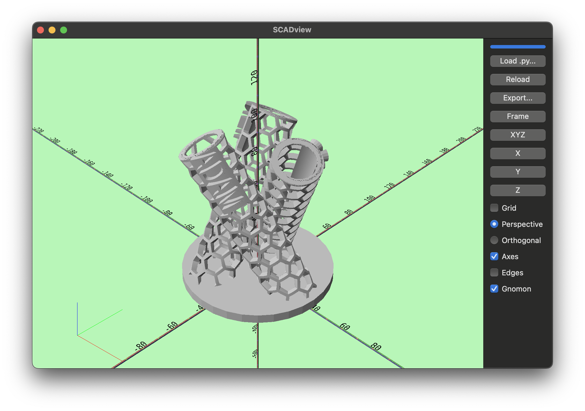
xyz.py
A generator that continuously rotates a frame with cut-out X/Y/Z letters and yields tinted meshes. Demonstrates infinite generators, transforms, booleans, and set_mesh_color.
Source
from datetime import datetime
import numpy as np
from trimesh.creation import box
from trimesh.transformations import rotation_matrix
from scadview import Color, set_mesh_color, text
LETTER_DEPTH = 10
FRAME = 2
RPS = 0.3
ALPHA = 0.5
def create_mesh():
x = center_mesh(
create_letter("X", LETTER_DEPTH).apply_transform(
rotation_matrix(np.pi / 2, (1, 0, 0))
@ rotation_matrix(np.pi / 2, (0, 1, 0))
)
)
y = center_mesh(
create_letter("Y", LETTER_DEPTH).apply_transform(
rotation_matrix(np.pi / 2, (1, 0, 0))
)
)
z = center_mesh(create_letter("Z", LETTER_DEPTH))
frame_dims = np.max(
[
x.extents + np.array((0, 1, 1)) * FRAME,
y.extents + np.array((1, 0, 1)) * FRAME,
z.extents + np.array((1, 1, 0)) * FRAME,
],
axis=1,
)
x.apply_scale((1.1 * frame_dims[0] / LETTER_DEPTH, 1, 1))
y.apply_scale((1, 1.1 * frame_dims[1] / LETTER_DEPTH, 1))
z.apply_scale((1, 1, 1.1 * frame_dims[2] / LETTER_DEPTH))
start_time = datetime.now()
frame = box(frame_dims)
while True:
yield set_mesh_color(
frame.difference(x.union(y).union(z)).apply_transform(
rotation_matrix(
2 * np.pi * (datetime.now() - start_time).total_seconds() * RPS,
(1.0, 0.5, 0.3),
)
),
Color.SILVER,
ALPHA,
)
def create_letter(letter: str, depth: float):
return text(letter).apply_scale((1.0, 1.0, depth))
def center_mesh(mesh):
center = (mesh.bounds[0] + mesh.bounds[1]) / 2
return mesh.apply_translation(-center)
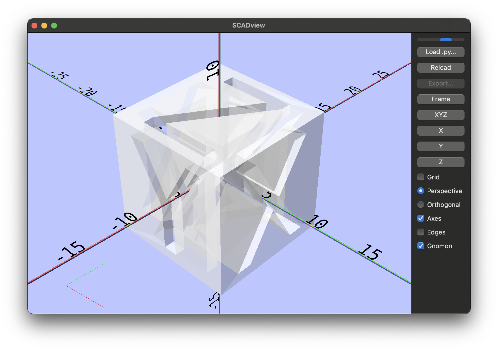
xyz_cube.py
Builds a cube with extruded X/Y/Z letters on each face and cuts the opposite letters to form a labeled axis cube. Shows text meshes, transformations, and boolean operations.
Source
import numpy as np
from pyrr.matrix44 import create_from_axis_rotation
from trimesh import Trimesh
from trimesh.creation import box
from scadview import text
SIZE = 50
TEXT_FRACTION = 0.8
TEXT_HEIGHT = SIZE / 10
TEXT_SHRINK_FACTOR = 0.15
def create_mesh():
box_mesh = box(extents=(SIZE, SIZE, SIZE))
x_mesh = text("X", halign="center", size=SIZE)
y_mesh = text("Y", halign="center", size=SIZE)
z_mesh = text("Z", halign="center", size=SIZE)
max_xy_extent = max(
x_mesh.bounds[0:2].max(), y_mesh.extents[0:2].max(), z_mesh.extents[0:2].max()
)
scale_xy = (SIZE / max_xy_extent) * TEXT_FRACTION
scale = (scale_xy, scale_xy, TEXT_HEIGHT)
x_mesh.apply_scale(scale)
y_mesh.apply_scale(scale)
z_mesh.apply_scale(scale)
x_mesh = shrink_towards_top(x_mesh, TEXT_SHRINK_FACTOR)
y_mesh = shrink_towards_top(y_mesh, TEXT_SHRINK_FACTOR)
z_mesh = shrink_towards_top(z_mesh, TEXT_SHRINK_FACTOR)
xy_center_mesh(x_mesh)
x_mesh.apply_transform(
create_from_axis_rotation((1, 0, 0), np.pi / 2)
).apply_transform(
create_from_axis_rotation((0, 0, 1), np.pi / 2)
).apply_translation((SIZE / 2, 0, 0))
xy_center_mesh(y_mesh)
y_mesh.apply_transform(
create_from_axis_rotation((1, 0, 0), np.pi / 2)
).apply_translation((0, SIZE / 2, 0)).apply_transform(
create_from_axis_rotation((0, 1, 0), np.pi)
)
xy_center_mesh(z_mesh)
z_mesh.apply_translation((0, 0, SIZE / 2))
x_bot_mesh = x_mesh.copy().apply_translation((-SIZE, 0, 0))
y_bot_mesh = y_mesh.copy().apply_translation((0, -SIZE, 0))
z_bot_mesh = z_mesh.copy().apply_translation((0, 0, -SIZE))
return (
box_mesh.union(x_mesh)
.union(y_mesh)
.union(z_mesh)
.difference(x_bot_mesh)
.difference(y_bot_mesh)
.difference(z_bot_mesh)
)
def xy_center_mesh(mesh: Trimesh) -> Trimesh:
bounds = mesh.bounds
center = (bounds[0] + bounds[1]) / 2
mesh.apply_translation([-center[0], -center[1], 0])
return mesh
def shrink_towards_top(mesh: Trimesh, factor: float) -> Trimesh:
"""Shrink the mesh towards its top face by the given factor (0 to 1)."""
centroid = mesh.centroid
vertices = mesh.vertices.copy()
for i, v in enumerate(vertices):
# Calculate how far along the Z axis this vertex is (0 at base, 1 at top)
t = factor * (v[2] - mesh.bounds[0][2]) / TEXT_HEIGHT
new_xy = (1 - t) * v[:2] + t * centroid[:2]
vertices[i][:2] = new_xy
mesh.vertices = vertices
return mesh
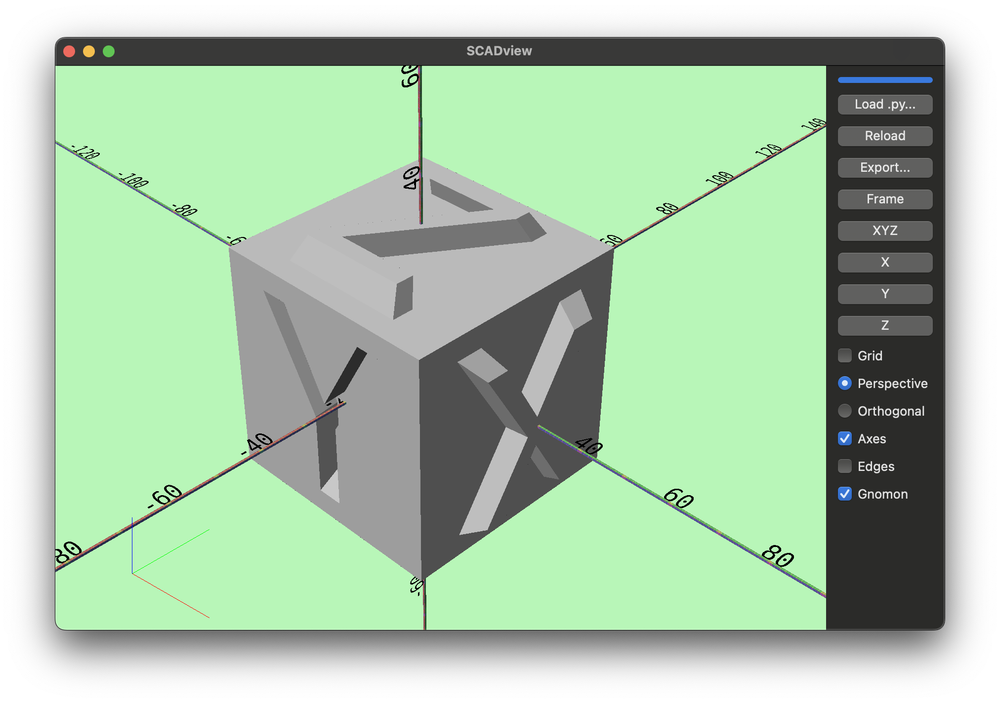